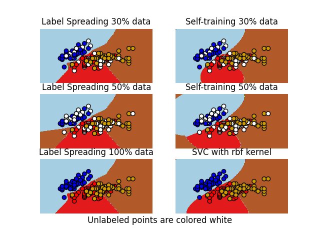

Note
Go to the end to download the full example code or to run this example in your browser via Binder
Decision boundary of semi-supervised classifiers versus SVM on the Iris dataset¶
A comparison for the decision boundaries generated on the iris dataset by Label Spreading, Self-training and SVM.
This example demonstrates that Label Spreading and Self-training can learn good boundaries even when small amounts of labeled data are available.
Note that Self-training with 100% of the data is omitted as it is functionally identical to training the SVC on 100% of the data.
# Authors: Clay Woolam <clay@woolam.org>
# Oliver Rausch <rauscho@ethz.ch>
# License: BSD
import matplotlib.pyplot as plt
import numpy as np
from sklearn import datasets
from sklearn.semi_supervised import LabelSpreading, SelfTrainingClassifier
from sklearn.svm import SVC
iris = datasets.load_iris()
X = iris.data[:, :2]
y = iris.target
# step size in the mesh
h = 0.02
rng = np.random.RandomState(0)
y_rand = rng.rand(y.shape[0])
y_30 = np.copy(y)
y_30[y_rand < 0.3] = -1 # set random samples to be unlabeled
y_50 = np.copy(y)
y_50[y_rand < 0.5] = -1
# we create an instance of SVM and fit out data. We do not scale our
# data since we want to plot the support vectors
ls30 = (LabelSpreading().fit(X, y_30), y_30, "Label Spreading 30% data")
ls50 = (LabelSpreading().fit(X, y_50), y_50, "Label Spreading 50% data")
ls100 = (LabelSpreading().fit(X, y), y, "Label Spreading 100% data")
# the base classifier for self-training is identical to the SVC
base_classifier = SVC(kernel="rbf", gamma=0.5, probability=True)
st30 = (
SelfTrainingClassifier(base_classifier).fit(X, y_30),
y_30,
"Self-training 30% data",
)
st50 = (
SelfTrainingClassifier(base_classifier).fit(X, y_50),
y_50,
"Self-training 50% data",
)
rbf_svc = (SVC(kernel="rbf", gamma=0.5).fit(X, y), y, "SVC with rbf kernel")
# create a mesh to plot in
x_min, x_max = X[:, 0].min() - 1, X[:, 0].max() + 1
y_min, y_max = X[:, 1].min() - 1, X[:, 1].max() + 1
xx, yy = np.meshgrid(np.arange(x_min, x_max, h), np.arange(y_min, y_max, h))
color_map = {-1: (1, 1, 1), 0: (0, 0, 0.9), 1: (1, 0, 0), 2: (0.8, 0.6, 0)}
classifiers = (ls30, st30, ls50, st50, ls100, rbf_svc)
for i, (clf, y_train, title) in enumerate(classifiers):
# Plot the decision boundary. For that, we will assign a color to each
# point in the mesh [x_min, x_max]x[y_min, y_max].
plt.subplot(3, 2, i + 1)
Z = clf.predict(np.c_[xx.ravel(), yy.ravel()])
# Put the result into a color plot
Z = Z.reshape(xx.shape)
plt.contourf(xx, yy, Z, cmap=plt.cm.Paired)
plt.axis("off")
# Plot also the training points
colors = [color_map[y] for y in y_train]
plt.scatter(X[:, 0], X[:, 1], c=colors, edgecolors="black")
plt.title(title)
plt.suptitle("Unlabeled points are colored white", y=0.1)
plt.show()
Total running time of the script: (0 minutes 0.967 seconds)